VinhKhanhAudioGuide
Hệ Thống Hướng Dẫn Âm Thanh
Full-stack enterprise: .NET MAUI (MVVM + DI) — ASP.NET Core 8 Razor Pages + Minimal API — SQL Server + EF Core — Cloudinary CDN — Edge TTS + Google TTS fallback — POI Change Request Workflow — Role-based RBAC (SystemAdmin / PoiAdmin).
Giới Thiệu Sản Phẩm
VinhKhanhAudioGuide (AudioLife) là hệ thống hướng dẫn âm thanh du lịch ẩm thực đường phố Vĩnh Khánh, Q4, TP.HCM. Kiến trúc enterprise với MVVM pattern trên mobile, Razor Pages trên web, EF Core + SQL Server, lưu trữ audio trên Cloudinary CDN, và TTS tự động bằng Edge Neural Voices với Google TTS fallback. Hệ thống có 2 portal riêng biệt: SystemAdmin (quản lý toàn bộ) và PoiAdmin/Shop (chủ quán quản lý địa điểm của mình).
Mục Tiêu
- Audio guide tự động cho du khách khi đến gần địa điểm (geolocation 100m)
- TTS đa ngôn ngữ: vi, en, zh, ja, ko, fr (Edge Neural + Google fallback)
- Cloudinary CDN lưu trữ audio MP3 chuyên nghiệp
- MVVM + Dependency Injection trên mobile
- POI Change Request: PoiAdmin gửi yêu cầu -> SystemAdmin duyệt
- Offline support: SQLite local database + audio download
2 Roles Quản Trị
- SystemAdmin: Full access — CRUD Locations, Categories, Tours, AudioGuides, Users, Reports, Settings, Change Requests
- PoiAdmin (Shop): Quản lý địa điểm được gán — sửa Location, tạo/sửa AudioGuide, gửi Change Request, xem Analytics, Reviews
Tính Năng Nổi Bật
- Plugin.Maui.Audio — audio player chuyên nghiệp (play/pause/seek/volume)
- AudioScriptSegment — hiển thị transcript đồng bộ theo thời gian phát
- Cloudinary upload + f_mp3 on-the-fly transformation
- Edge TTS với 6 Neural voices + Google TTS fallback khi 403
- QR code scanning cho AppUser identification
- Feedback/Rating system (1-5 stars) per location
- Download audio offline với SQLite tracking
Kiến Trúc Hệ Thống
graph TB
subgraph Mobile ["Mobile — .NET MAUI (MVVM + DI)"]
M_VIEWS["Views
(17 pages)
XAML + Code-behind"]
M_VM["ViewModels (15)
CommunityToolkit.Mvvm"]
M_SVC["Services
ApiService, AudioService
GeolocationService"]
M_DB["SQLite
mobile_local.db3"]
M_NAV["NavigationService
Shell routing"]
end
subgraph Web ["Web — ASP.NET Core 8"]
W_RAZOR["Razor Pages
Admin + Shop portals"]
W_API["Minimal API
/api/mobile/*"]
W_SVC["Services
TTS, Cloudinary
ChangeRequest, Auth"]
W_EF["EF Core
AppDbContext"]
end
subgraph Infra ["Infrastructure"]
SQLSRV[("SQL Server
AudioDB")]
CLOUD["Cloudinary CDN
Audio MP3 storage"]
EDGE["Edge TTS
Neural Voices"]
GTTS["Google TTS
Fallback"]
end
M_VIEWS --> M_VM
M_VM --> M_SVC
M_SVC --> M_DB
M_SVC -->|HTTP| W_API
W_RAZOR --> W_SVC
W_RAZOR --> W_EF
W_API --> W_EF
W_SVC --> CLOUD
W_SVC --> EDGE
W_SVC -.->|fallback| GTTS
W_EF --> SQLSRV
style M_VIEWS fill:#1565C0,color:#fff
style W_RAZOR fill:#7c3aed,color:#fff
style W_API fill:#16a34a,color:#fff
style CLOUD fill:#e65100,color:#fff
style EDGE fill:#00838f,color:#fff
Class Diagram
classDiagram
class Location {
+string Id
+string Name
+string Description
+string ImageUrl
+string Address
+double Latitude
+double Longitude
+int Duration
+string CategoryId
+ICollection AudioGuides
+ICollection TourLocations
+ICollection Feedbacks
}
class AudioGuide {
+string Id
+string Title
+string Description
+string AudioUrl
+string CloudinaryAudioUrl
+string CloudinaryPublicId
+string TranscriptText
+int Duration
+string LocationId
+string Language
+bool GeneratedFromTts
+string TtsSourceText
+ICollection ScriptSegments
+ICollection ListeningHistories
}
class AudioScriptSegment {
+int Id
+string AudioGuideId
+int StartTimeSeconds
+int EndTimeSeconds
+string ScriptText
}
class Category {
+string Id
+string Name
+string Icon
+string Description
+ICollection Locations
}
class Tour {
+string Id
+string Name
+string Description
+string ImageUrl
+int Duration
+decimal Price
+bool IsFeatured
+ICollection TourLocations
}
class TourLocation {
+string TourId
+string LocationId
+int SortOrder
}
class AppUser {
+string Id
+string ScannedQrCode
+DateTime CreatedAt
+bool IsActive
}
class Feedback {
+int Id
+string UserId
+string LocationId
+int Rating
+string Comment
+DateTime CreatedAt
}
class ListeningHistory {
+int Id
+string UserId
+string AudioGuideId
+int ListenedSeconds
+bool IsCompleted
+DateTime LastListenedAt
}
class AuthUserAccount {
+int Id
+string Username
+string Password
+string DisplayName
+string Role
+bool IsActive
}
class PoiChangeRequest {
+Guid Id
+string SubmittedByUsername
+string LocationId
+string Topic
+string Title
+string Details
+PoiChangeTargetType TargetType
+string TargetEntityId
+string ChangeSetJson
+PoiChangeRequestStatus Status
+string ReviewNote
}
class PoiAdminLocationAssignment {
+int Id
+string Username
+string LocationId
}
Location "1" --> "*" AudioGuide: has
Location "1" --> "*" Feedback: receives
AudioGuide "1" --> "*" AudioScriptSegment: has segments
AudioGuide "1" --> "*" ListeningHistory: tracked
Category "1" --> "*" Location: contains
Tour "*" --> "*" Location: via TourLocation
AppUser "1" --> "*" ListeningHistory: listens
AppUser "1" --> "*" Feedback: writes
AuthUserAccount "1" --> "*" PoiChangeRequest: submits
PoiAdminLocationAssignment "*" --> "1" Location: assigned
ER Diagram — SQL Server
erDiagram
Categories {
string Id PK
string Name
string Icon
string Description
}
Locations {
string Id PK
string Name
string Description
string ImageUrl
string Address
double Latitude
double Longitude
int Duration
string CategoryId FK
}
AudioGuides {
string Id PK
string Title
string Description
string AudioUrl
string CloudinaryAudioUrl
string CloudinaryPublicId
string TranscriptText
int Duration
string LocationId FK
string Language
bool GeneratedFromTts
string TtsSourceText
}
AudioScriptSegments {
int Id PK
string AudioGuideId FK
int StartTimeSeconds
int EndTimeSeconds
string ScriptText
}
Tours {
string Id PK
string Name
string Description
string ImageUrl
int Duration
decimal Price
bool IsFeatured
}
TourLocations {
string TourId FK
string LocationId FK
int SortOrder
}
AppUsers {
string Id PK
string ScannedQrCode
datetime CreatedAt
bool IsActive
}
Feedbacks {
int Id PK
string UserId FK
string LocationId FK
int Rating
string Comment
}
ListeningHistories {
int Id PK
string UserId FK
string AudioGuideId FK
int ListenedSeconds
bool IsCompleted
}
AuthUserAccounts {
int Id PK
string Username
string Password
string DisplayName
string Role
bool IsActive
}
PoiChangeRequests {
guid Id PK
string SubmittedByUsername
string LocationId
string TargetEntityId
string ChangeSetJson
int Status
string ReviewNote
}
PoiAdminLocationAssignments {
int Id PK
string Username
string LocationId
}
Categories ||--o{ Locations: "contains"
Locations ||--o{ AudioGuides: "has"
AudioGuides ||--o{ AudioScriptSegments: "has"
AudioGuides ||--o{ ListeningHistories: "tracked"
AppUsers ||--o{ ListeningHistories: "listens"
AppUsers ||--o{ Feedbacks: "writes"
Locations ||--o{ Feedbacks: "receives"
Tours }o--o{ Locations: "via TourLocations"
Locations ||--o{ PoiAdminLocationAssignments: "assigned"
Mobile App — 17 Pages, MVVM Pattern
Kiến trúc MVVM + Dependency Injection với
CommunityToolkit.Mvvm. Tất cả ViewModels dùng
[ObservableProperty], [RelayCommand].
Services được inject qua constructor. Navigation qua Shell routing.
IntroPage
Onboarding giới thiệu app. Chuyển đến MainPage sau khi hoàn thành.
MainPage
Trang chủ — danh sách locations, categories, featured tours. Search bar.
MapPage
Bản đồ tương tác hiển thị locations. Geolocation tracking 100m radius.
LocationDetailPage
Chi tiết địa điểm — hình ảnh, mô tả, audio guides, feedbacks. Favorite toggle.
AudioPlayerPage
Player chuyên nghiệp: play/pause/seek/volume. Transcript hiển thị đồng bộ theo AudioScriptSegment.
ToursPage + TourDetailPage
Danh sách tours + chi tiết tour với locations theo thứ tự SortOrder.
SearchPage
Tìm kiếm locations theo tên, mô tả, địa chỉ.
FavoritesPage
Danh sách địa điểm yêu thích (SQLite local).
HistoryPage
Lịch sử nghe audio — ListeningHistory với listened seconds, completion.
DownloadsPage
Audio đã tải về offline. Quản lý dung lượng. Xóa downloads.
ProfilePage + EditProfilePage
Hồ sơ người dùng. Chỉnh sửa thông tin.
SettingsPage + LanguageSection
Cài đặt app. Chọn ngôn ngữ (vi/en/zh/ja/ko/fr).
HelpPage + AboutPage
Hướng dẫn sử dụng và thông tin ứng dụng.
Audio Playback — Plugin.Maui.Audio
AudioService dùng Plugin.Maui.Audio (IAudioManager) để phát MP3. Hỗ trợ play/pause/resume/stop/seek/volume. Position timer cập nhật mỗi 500ms. AudioScriptSegment hiển thị transcript đồng bộ theo thời gian.
Geolocation — Nearby Detection
GeolocationService theo dõi vị trí mỗi 60 giây. Khi phát hiện
location trong bán kính 100m (Haversine), phát sự kiện
NearbyLocationDetected. Chỉ trigger 1 lần cho mỗi
location (theo dõi _lastNearestLocationId).
Tracking Config
- Radius: 100m (0.1 km)
- Interval: 60 seconds
- Accuracy: GeolocationAccuracy.Medium
- Timeout: 10 seconds per request
Haversine Formula
Earth radius 6,371 km. Tính khoảng cách chính xác giữa 2 tọa độ GPS. Kết quả trả về km.
Mobile API — Minimal API Endpoints
| Endpoint | Method | Mô Tả |
|---|---|---|
/api/mobile/health |
GET | Health check |
/api/mobile/categories |
GET | Tất cả categories + location count |
/api/mobile/locations |
GET | Tất cả locations + audio guides |
/api/mobile/locations/{id} |
GET | Chi tiết location + audio guides |
/api/mobile/locations/by-category/{categoryId}
|
GET | Locations theo category |
/api/mobile/locations/search?query= |
GET | Tìm kiếm (Name, Description, Address) |
/api/mobile/locations/nearby?lat=&lng=&radiusKm=
|
GET | Nearby (Haversine, default 100m) |
/api/mobile/tours |
GET | Tất cả tours + location IDs |
/api/mobile/tours/{id} |
GET | Chi tiết tour |
/api/mobile/tours/featured |
GET | Tours nổi bật (IsFeatured=true) |
/api/mobile/audio/by-location/{locationId}
|
GET | Audio guides + script segments theo location |
/api/mobile/audio/{id} |
GET | Chi tiết audio guide + segments |
TTS Service — Edge Neural + Google Fallback
EdgeTextToSpeechService dùng thư viện
EdgeTTS (NuGet) để tạo audio MP3 từ text. 6 Neural
voices. Khi Edge trả về 403, tự động fallback sang Google Translate
TTS (free). Text dài được split thành chunks 180 ký tự, merge MP3 và
strip ID3 headers.
| Language | Edge Voice | Google Code |
|---|---|---|
| vi - Tiếng Việt | vi-VN-HoaiMyNeural | vi |
| en - English | en-US-JennyNeural | en |
| zh - Trung | zh-CN-XiaoxiaoNeural | zh-CN |
| ja - Nhật | ja-JP-NanamiNeural | ja |
| ko - Hàn | ko-KR-SunHiNeural | ko |
| fr - Pháp | fr-FR-DeniseNeural | fr |
Cloudinary Audio Storage
CloudinaryAudioStorageService upload audio lên
Cloudinary CDN. Dùng VideoUploadParams (Cloudinary coi
audio là video). URL cuối cùng được transform:
/video/upload/ →
/video/upload/f_mp3/ để on-the-fly convert sang MP3.
Mỗi file có unique PublicId.
Upload Flow
- IFormFile hoặc Stream → Cloudinary API
- Folder:
audio/ - PublicId:
{prefix}-{GUID} - URL transform: f_mp3 on-the-fly
Stored Fields
AudioUrl— URL cuối cùng (f_mp3)CloudinaryAudioUrl— URL gốc CloudinaryCloudinaryPublicId— ID để manage/delete
Authentication & RBAC
Cookie Authentication với CookieAuthenticationDefaults.
2 roles: SystemAdmin và PoiAdmin.
Auth source: appsettings.json (config users) +
AuthUserAccounts table (DB users). PoiAdmin được gán
location qua PoiAdminLocationAssignments. Authorization
policies: SystemAdminOnly, PoiAdminOnly.
| Role | Access | Folders |
|---|---|---|
| SystemAdmin | Full access: Admin, Categories, Locations, Tours, AudioGuides | /Admin/*, /Categories/*, /Locations/*, /Tours/*, /AudioGuides/* |
| PoiAdmin | Địa điểm được gán: sửa Location, tạo/sửa AudioGuide, gửi ChangeRequest | /Shop/* |
CanAccessLocation() trước mỗi thao tác. SystemAdmin có
thể chuyển/gán lại locations giữa các PoiAdmin.
POI Change Request Workflow
PoiChangeRequestService quản lý quy trình: PoiAdmin gửi
yêu cầu thay đổi (Location hoặc AudioGuide) → SystemAdmin duyệt
(Approved/Rejected). Khi Approved, hệ thống tự động
TryApplyChangeSetAsync() — parse ChangeSetJson và apply
từng field vào entity.
TargetType
-
Location— sửa Name, Description, Address, ImageUrl, Lat/Lng, Duration -
AudioGuide— sửa Title, Description, AudioUrl, Cloudinary fields, Language, Transcript. Hỗ trợcreate-audio-guideaction.
Status Flow
-
Pending→InReview→Approved/Rejected - ChangeSetJson lưu JSON diff của các fields thay đổi
- ReviewNote: ghi chú của admin khi duyệt/từ chối
SystemAdmin — Razor Pages
Admin/Index
Dashboard tổng quan: stats, recent activities.
Admin/Users
CRUD AuthUserAccounts. Gán role, assign locations cho PoiAdmin.
Admin/ChangeRequests
Duyệt/từ chối POI Change Requests. Xem diff ChangeSetJson.
Admin/Reports
Báo cáo thống kê: listening, feedback, locations.
Admin/Settings
Cấu hình hệ thống.
Locations/*
CRUD Locations + MapView (bản đồ tổng quan).
Categories/*
CRUD Categories (Quán ăn, WC, Bãi xe...).
Tours/*
CRUD Tours + gán TourLocations với SortOrder.
AudioGuides/*
CRUD AudioGuides + TTS generation + Cloudinary upload.
PoiAdmin (Shop) Portal
Shop/Index
Dashboard của PoiAdmin — chỉ hiện locations được gán.
Shop/Locations/Edit
Sửa thông tin location (chỉ những địa điểm được assign).
Shop/AudioGuides/*
CRUD audio guides cho locations của mình. TTS generate + Cloudinary upload.
Shop/ChangeRequests
Gửi yêu cầu thay đổi. Xem trạng thái pending/approved/rejected.
Shop/Analytics
Thống kê nghe audio cho locations của mình.
Shop/Reviews
Xem feedback/reviews của du khách cho locations.
State Diagrams
stateDiagram-v2
[*] --> None
None --> Loading: PlayAsync(url)
Loading --> Playing: Player ready
Loading --> Error: Load failed
Playing --> Paused: PauseAsync()
Paused --> Playing: ResumeAsync()
Playing --> Stopped: StopAsync()
Paused --> Stopped: StopAsync()
Playing --> Completed: PlaybackEnded
Completed --> None: Reset
Stopped --> None: Reset
Error --> None: Reset
note right of Playing
Position timer 500ms
Transcript sync per segment
Volume control 0.0-1.0
end note
stateDiagram-v2
[*] --> Pending: PoiAdmin submits
Pending --> InReview: Admin starts review
InReview --> Approved: Admin approves
InReview --> Rejected: Admin rejects
Approved --> Applied: TryApplyChangeSetAsync()
Applied --> [*]: Done
note right of Approved
Auto parse ChangeSetJson
Apply field-by-field to
Location or AudioGuide
end note
stateDiagram-v2 [*] --> TextInput: Admin enters text TextInput --> EdgeTTS: SynthesizeAsync() EdgeTTS --> MP3Generated: Success EdgeTTS --> GoogleFallback: 403 Error GoogleFallback --> MP3Generated: Chunks merged GoogleFallback --> Failed: Also rejected MP3Generated --> CloudinaryUpload: Upload MP3 CloudinaryUpload --> Saved: AudioGuide updated Saved --> [*] Failed --> [*]: Manual upload needed
stateDiagram-v2 [*] --> Idle Idle --> RequestPermission: StartTrackingAsync() RequestPermission --> Tracking: Permission granted RequestPermission --> Idle: Denied Tracking --> CheckNearby: GPS position received CheckNearby --> Notify: Location within 100m CheckNearby --> Tracking: No nearby location Notify --> Tracking: Wait 60s next cycle Tracking --> Idle: StopTracking()
Sequence Diagrams
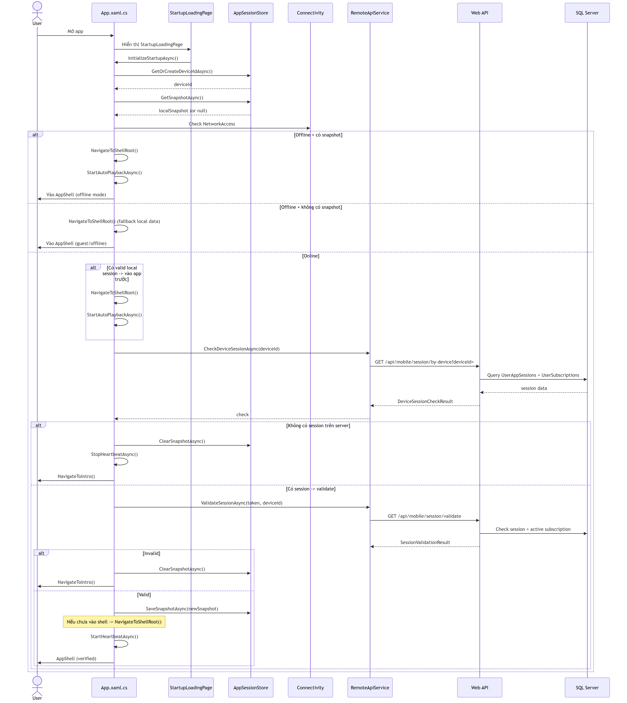
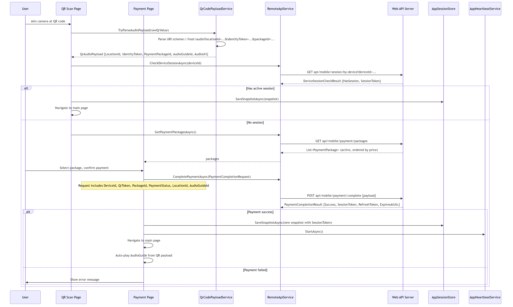
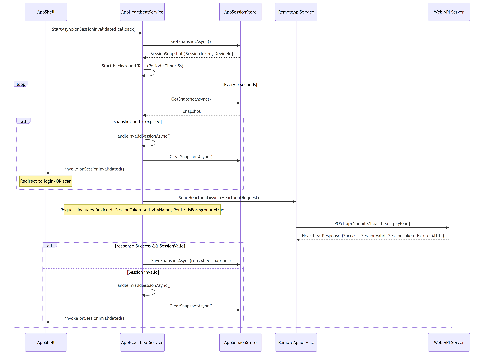
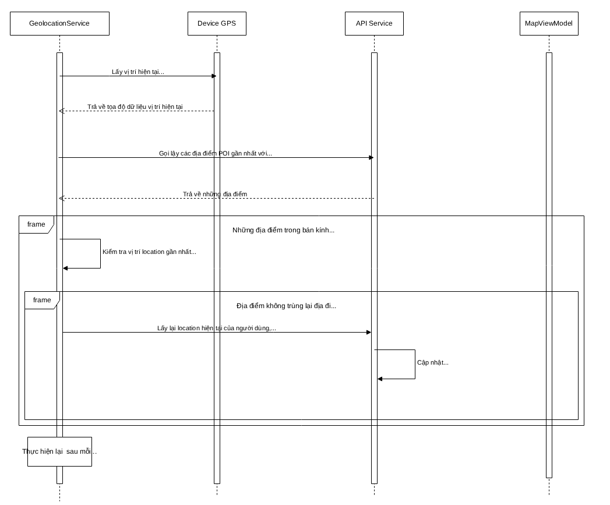
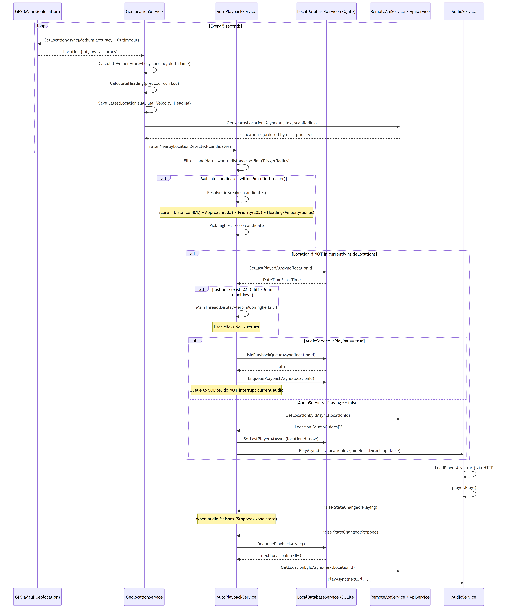
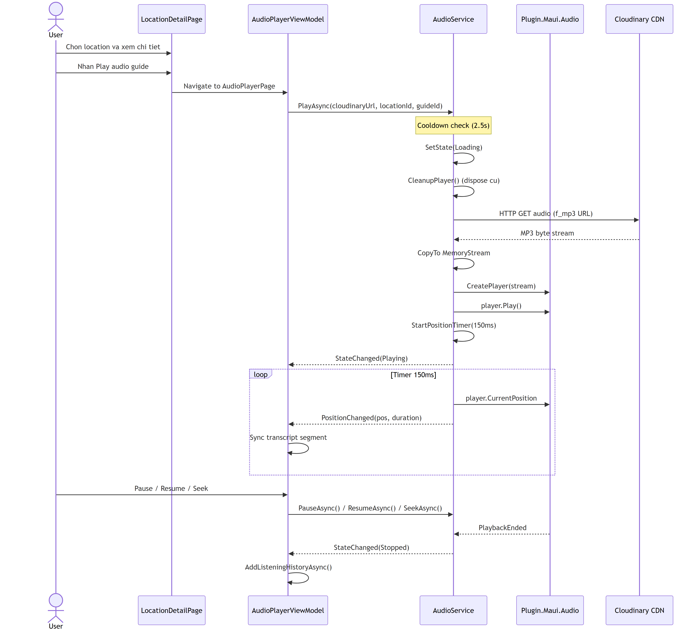
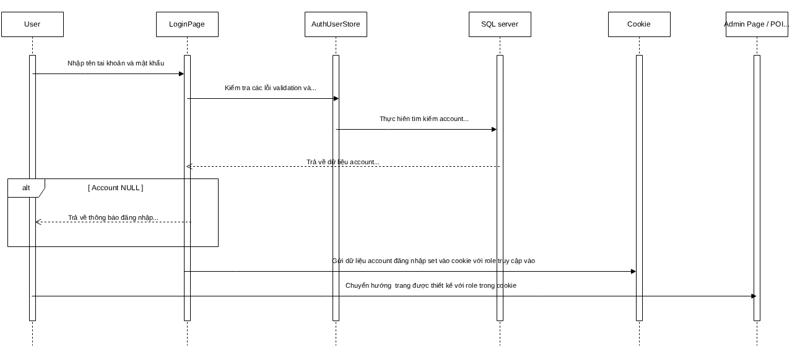
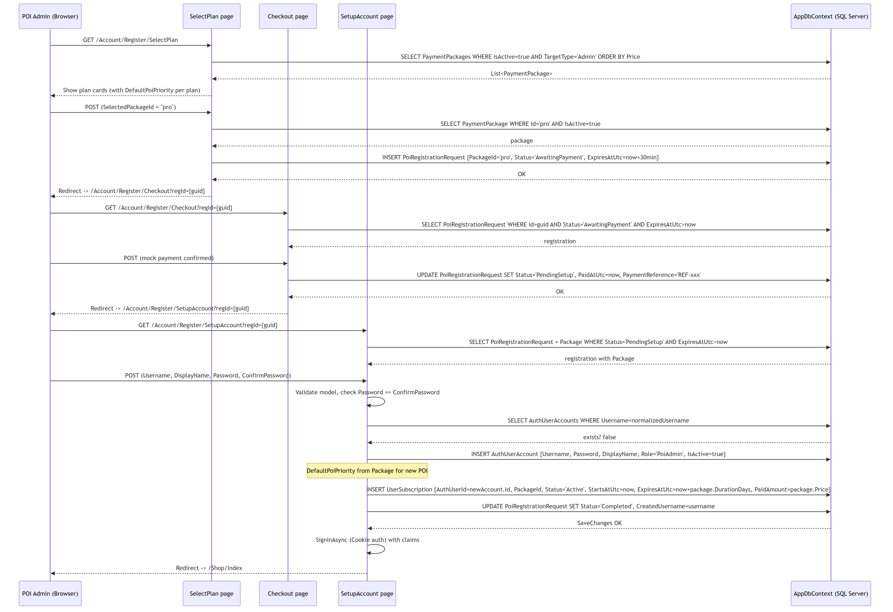
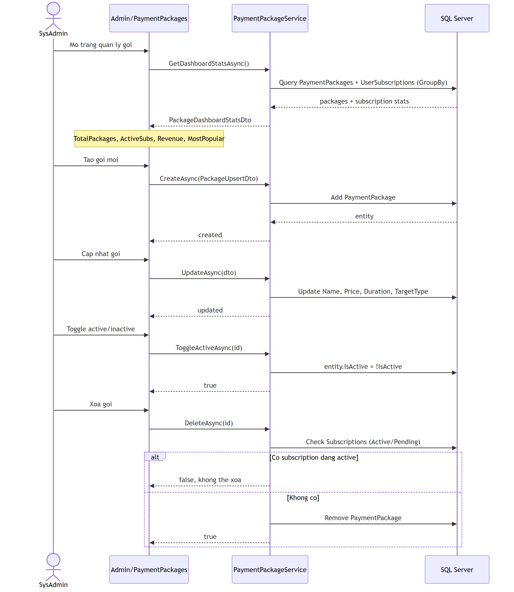
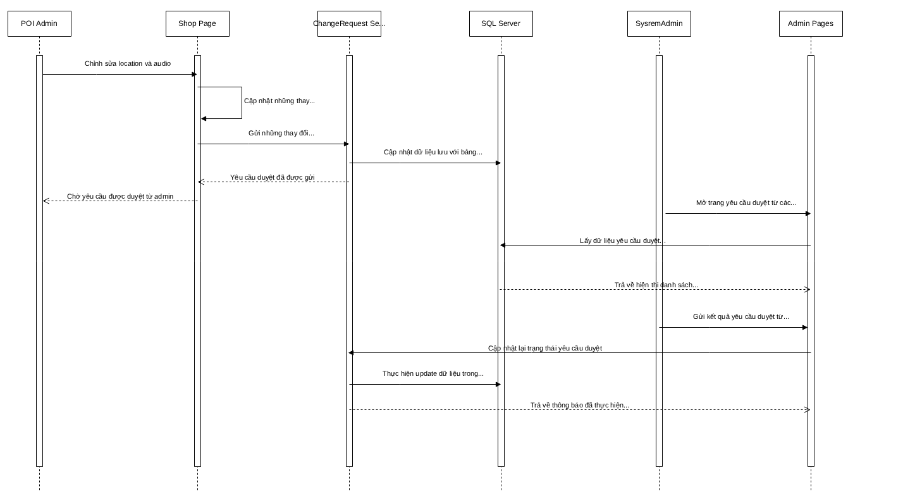
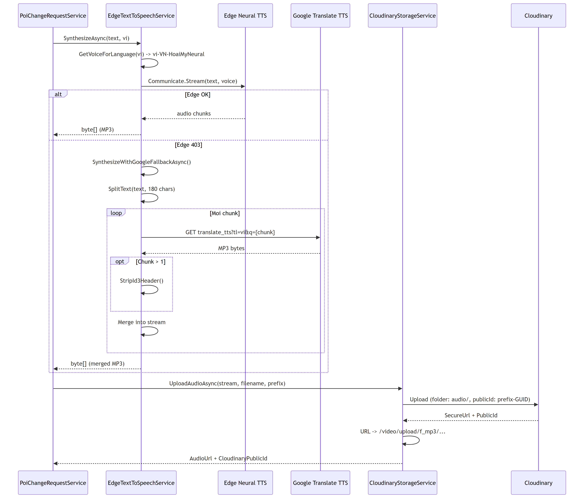
Activity Diagrams
flowchart TD
A([Admin opens AudioGuide Create]) --> B{Upload or TTS?}
B -->|Upload file| C[Validate file format]
C --> D[CloudinaryAudioStorageService.Upload]
D --> E[Transform URL: f_mp3]
B -->|Generate TTS| F[Enter text + select language]
F --> G[EdgeTTSService.SynthesizeAsync]
G --> H{Edge success?}
H -->|Yes| I[MP3 bytes ready]
H -->|No 403| J[Google TTS Fallback]
J --> K[Split text 180 chars]
K --> L[Merge chunks + strip ID3]
L --> I
I --> D
E --> M[Save to DB: AudioUrl, CloudinaryPublicId]
M --> N{Add ScriptSegments?}
N -->|Yes| O[Add timestamp + text segments]
N -->|No| P([AudioGuide created])
O --> P
style A fill:#7c3aed,color:#fff
style P fill:#16a34a,color:#fff
flowchart TD
A([TryApplyChangeSetAsync]) --> B[Parse ChangeSetJson]
B --> C{TargetType?}
C -->|Location| D[Find Location by TargetEntityId]
D --> E{Location exists?}
E -->|No| FAIL([Return false])
E -->|Yes| F[Apply field changes]
F --> G[Name, Description, Address]
F --> H[ImageUrl, Lat, Lng, Duration]
G --> OK([Return true])
H --> OK
C -->|AudioGuide| I{Action = create?}
I -->|Yes| J[Verify LocationId exists]
J --> K[Create new AudioGuide]
K --> L[Apply fields from ChangeSet]
L --> OK
I -->|No| M[Find existing AudioGuide]
M --> N{Exists and same LocationId?}
N -->|No| FAIL
N -->|Yes| O[Apply field changes]
O --> P[Title, Description, AudioUrl]
O --> Q[Cloudinary fields, Language, TTS]
P --> OK
Q --> OK
style A fill:#7c3aed,color:#fff
style OK fill:#16a34a,color:#fff
style FAIL fill:#dc2626,color:#fff
flowchart TD
A([StartTrackingAsync]) --> B{Permission granted?}
B -->|No| Z([Stop])
B -->|Yes| C[Set _isTracking = true]
C --> D[GetLocationAsync GPS]
D --> E{Got position?}
E -->|No| F[Wait 60s retry]
F --> D
E -->|Yes| G[CheckNearbyLocationsAsync]
G --> H[GetNearbyLocationsAsync lat,lng,0.1km]
H --> I{Found nearby?}
I -->|No| F
I -->|Yes| J{Same as lastNearestId?}
J -->|Yes| F
J -->|No| K[Fire NearbyLocationDetected]
K --> L[Update _lastNearestLocationId]
L --> F
style A fill:#00838f,color:#fff
style K fill:#1565C0,color:#fff
style Z fill:#64748b,color:#fff
Tech Stack & Constants
Mobile
- .NET MAUI 8 (MVVM)
- CommunityToolkit.Mvvm
- Plugin.Maui.Audio
- SQLite-net (local DB)
- Shell navigation
Web Backend
- ASP.NET Core 8 Razor Pages
- Minimal API (/api/mobile/*)
- EF Core + SQL Server
- Cookie Authentication
- EdgeTTS (NuGet)
- CloudinaryDotNet
Infrastructure
- SQL Server (AudioDB)
- Cloudinary CDN (audio)
- Edge Neural Voices (6 langs)
- Google TTS (fallback)
- Bootstrap 5 (admin UI)
| Constant | Value | Location |
|---|---|---|
| Nearby Radius | 100m (0.1 km) | GeolocationService.cs |
| Tracking Interval | 60 seconds | GeolocationService.cs |
| Position Timer | 500ms | AudioService.cs |
| Cookie Expiry | 8 hours (sliding) | Program.cs |
| Database | AudioDB (SQL Server) | appsettings.json |
| Cloudinary Folder | audio/ | appsettings.json |
| Google TTS chunk | 180 chars max | EdgeTTSService.cs |
| Audio Transform | f_mp3 (on-the-fly) | CloudinaryService.cs |
| SystemAdmin role | SystemAdmin | RoleNames.cs |
| PoiAdmin role | PoiAdmin | RoleNames.cs |
Roadmap
Security
- JWT tokens thay Cookie cho mobile API
- Password hashing (bcrypt/Argon2)
- API rate limiting
- HTTPS enforcement
Features
- Realtime listening analytics dashboard
- Push notifications khi gán POI
- Social sharing / QR code tours
- Multi-language UI (mobile app)
- Payment integration cho tours có phí
Infrastructure
- Docker containerization
- CI/CD pipeline (GitHub Actions)
- Azure deployment
- CDN caching optimization